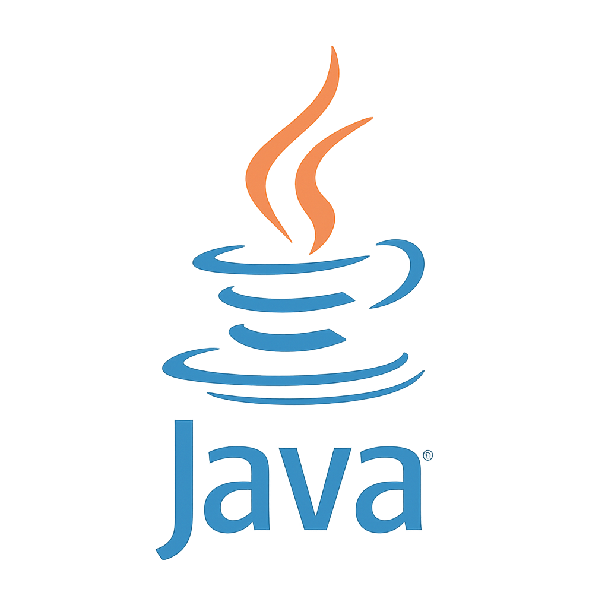
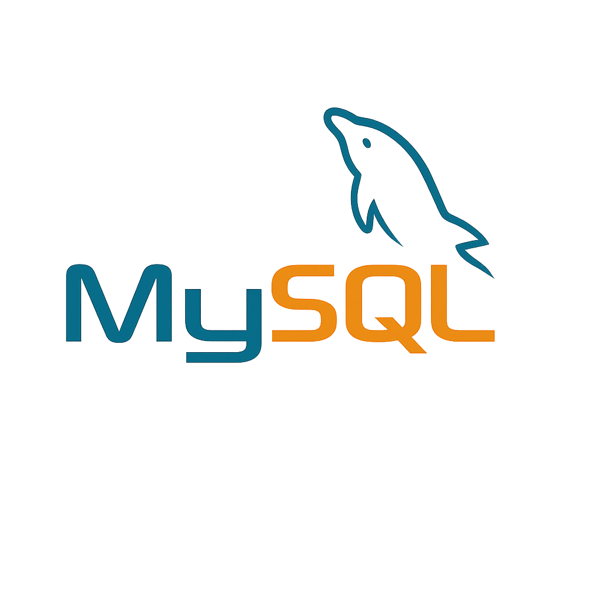
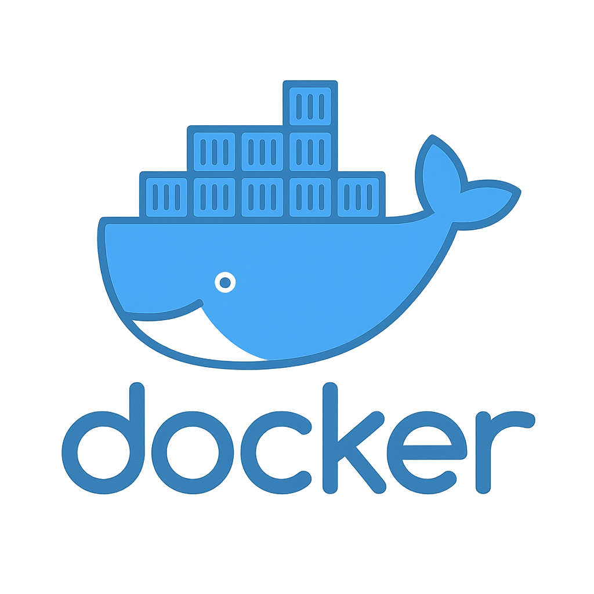
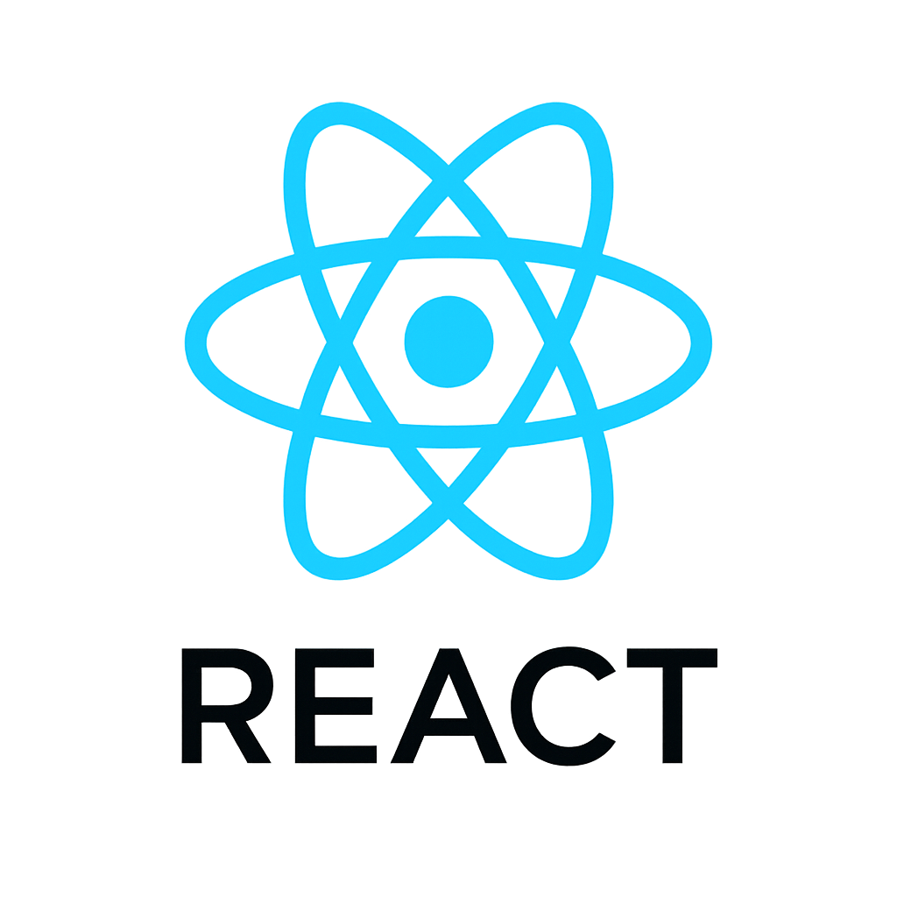
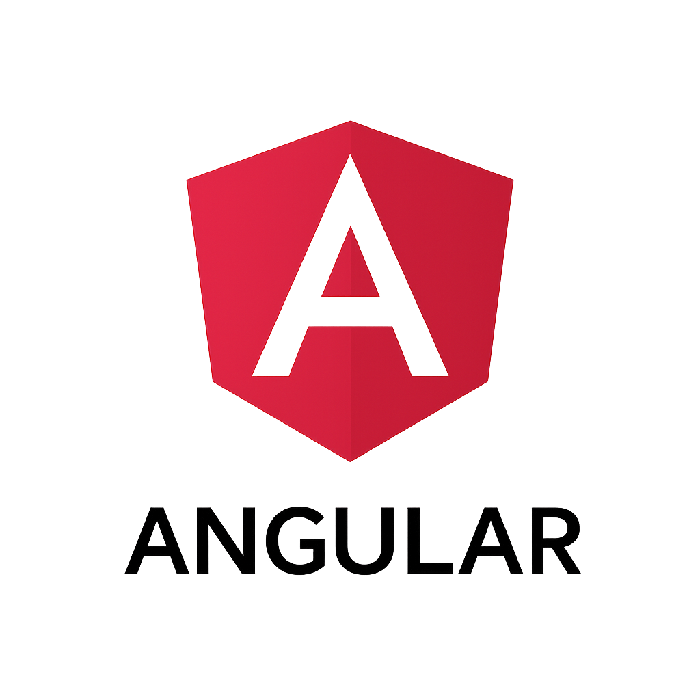

Sobre mí
Hola! Soy Sebastián. Estudiante, apasionado por el desarrollo de software y la tecnología.
En mi último rol me desempeñé como Desarrollador Java, realizando tareas de QA, y también como profesor de electrónica.
Me recibí de Técnico Superior en Automatización y Robótica, y actualmente continúo en formación en el sector IT y realizando capacitaciones/cursos.
Durante mi formación aprendí lenguaje Java, C, Python, MySQL y MongoDB, y en la actualidad sigo profundizando mis conocimientos orientandome al stack de Spring.
En mi tiempo libre me gusta salir a pasear, tocar la guitarra, hacer deporte, jugar videojuegos y pasar tiempo de calidad con mis seres queridos.
Mi Stack

Java
Spring Boot

MySQL

Docker

React

Angular
Proyectos destacados
Skills
Backend
Java · Spring Boot · JPA/Hibernate · REST · Maven · Gradle · C · Python · Node.Js
Datos
MySQL · PostgreSQL · SQL puro · JPA Criteria · MongoDB
DevOps
Docker · GitHub Actions · CI/CD básico
Front
HTML · CSS · JavaScript · TypeScript (básico) · JSP · React (básico)
IoT
ESP32/ESP8266 · Arduino · UART/I2C/SPI · LCD · DHT
Docencia
Guías prácticas · PCB · Soldadura · Sensores · Desarrollo Web
Formación
Licenciatura en Informatica
Tecnicatura Superior en Automatización y Robótica
Contacto
Comunicate conmigo: